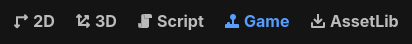

Game embedding
Godot supports optionally running the game in the editor itself. This is enabled by default.
Note
The game always runs in a separate process, no matter the embedding mode used. This means that if the game crashes, it will not crash the editor.
Configuring game embedding
Game embedding can be in one of 3 states:
Floating window (default): The game runs in a separate window, with a Game bar at the top that allows you to adjust settings and select nodes in the embedded game. Clicking the main screen button focuses the floating window.
Main window: The game runs in the editor, with a Game bar at the top that allows you to adjust settings and select nodes in the embedded game. Clicking the main screen button switches to the tab with the running project.
Disabled: The game runs in a separate window, as if it was an exported project. The Game bar at the top is not present; selecting nodes in the embedded game is not possible.
To configure this functionality, click the Game main screen at the top of the editor:

Accessing the Game embedding main screen
Once on the Game main screen, click the dropdown menu in the top-right corner of the Game bar:

Game embedding mode dropdown
Two options are available to configure the game embedding mode:
Embed Game on Next Play: If enabled, game embedding is enabled and the Game bar is available for use on the running game.
Make Window Floating on Next Play: If enabled, the game runs in a floating window. If disabled, the game runs in the main editor window.
Embedded window sizing
As seen in the dropdown menu on the right of the Game bar, there are several choices available to configure the embedded window size behavior. This affects both the floating and main window embedding modes:
Fixed Size (default): Set the viewport size to a fixed resolution, as configured in the Project Settings. If both display/window/size/window_width_override and display/window/size/window_height_override are set above
0, this override is used instead.Keep Aspect Ratio: The viewport size stretches to match the game window size, but always follows the aspect ratio defined by the
width / heightas configured in the Project Settings.Stretch to Fit: The viewport size stretches to match the game window size, and may use an aspect ratio different than the one defined by the
width / heightas configured in the Project Settings. This matches the behavior when game embedding is disabled.
These options have no effect when game embedding is disabled.
Features
When game embedding is enabled, several features can be adjusted while the project is running using the Game bar at the top.

Game bar at the top of the embedded game window
In order from left to right:
Pause (F9)
Pauses/resumes the game. When paused, the game will stop processing physics and idle frames, but it will still render and process input. This allows you to select nodes in the scene and inspect their properties in the editor inspector while the game is running.
Frame advance (F10)
Only available when the game is paused. Advances the game by one frame, allowing you to inspect the state of the game at a specific moment in time. This can be used to diagnose short-lived interactions (such as collisions) that are hard to inspect when the game is running at full speed.
Game speed
This option is a menu that can adjust the game speed. If the game sets Engine.time_scale at runtime, it will be multiplied by the value set here.

Game speed dropdown on the left of the Game bar
This can be used to view interactions in slow motion, or speed up the game significantly to test mechanics that normally take a long time to occur.
The reset button to the right of the dropdown resets the game speed to normal (1.0×).
Tip
When adjusting the game speed using this mechanism, the physics tick rate (determined by the physics/common/physics_ticks_per_second project setting) is automatically multiplied by the game speed. This allows the game logic to run at a different speed without affecting the physics simulation. For example:
If you set the game speed to 0.5, the physics tick rate is halved.
If you set the game speed to 4.0, the physics tick rate is quadrupled.
The maximum number of physics steps per frame is also increased to match the new physics tick rate, but it will not decrease below the default value when running in slow motion.
Interaction mode
This controls the behavior when clicking or pressing keys while the embedded game window has focus.
Input (default): Allow game input as usual.
2D: Disable game input and allow selecting Node2Ds, Controls, and manipulating the 2D camera.
3D: Disable game input and allow selecting Node3Ds and manipulating the 3D camera.
Nodes that are selected in the 2D and 3D modes can be inspected in the editor's inspector, just like if they were selected in the editor. This allows you to inspect and modify properties of nodes in the running game.
Warning
Like in the Remote scene tree, changes made to the running game this way are not preserved when the game is stopped.
To make changes that are preserved after stopping the game, you need to select the nodes in the editor's Local scene tree and modify them from there while the game is running instead. Make sure is enabled when doing this.
Select mode
Only effective if the interaction mode is 2D or 3D, not Input.
When enabling this option, the "show list of selectable nodes at position clicked" mode is disabled. However, you can still perform this action in select mode by using Ctrl + Alt + Right mouse button at the desired location.
Show list of selectable nodes at position clicked
Only effective if the interaction mode is 2D or 3D, not Input.
Like in the editor, this shows a list of selectable nodes at the position clicked. This is useful when multiple nodes are overlapping and you want to select a specific one. When enabling this option, select mode is disabled.
Toggle selection visibility
Only effective if the interaction mode is 2D or 3D, not Input.
By default, the selected node in 2D or 3D interaction mode is highlighted with an orange rectangle or box (like in the editor).
When this option is enabled, it appears as a closed eye icon. Future selections will not be highlighted in the game view, but are still selected for inspection in the inspector. This is useful to avoid visual clutter.
Selection advanced options
Two advanced options are available in the dropdown menu next to the select mode icons:
Don't Select Locked Nodes: When enabled, nodes that are locked in the editor cannot be selected. This mimics editor behavior.
Select Group over Children: When enabled, grouped nodes are selected instead of their individual children. This mimics editor behavior.
Mute game audio
This mutes game audio when enabled, without affecting the editor or other applications. This is particularly useful on macOS and Android, which do not come with a per-application volume slider out of the box.
Camera override
When enabled, the camera stops following the game camera. You can then move the 2D/3D camera freely by switching to the 2D/3D interaction mode and using the typical navigation controls:
In the 2D interaction mode, use the middle mouse button (or Space + Left mouse button) to pan around and the mouse wheel to zoom.
In the 3D interaction mode, hold the right mouse button and press W, A, S, and D to use freelook. Use the middle mouse button to orbit, Shift + Middle mouse button to pan, and the mouse wheel to zoom. Additionally, you can use Ctrl + Minus, Ctrl + Plus, and Ctrl + 0 to control the field of view (relative to the game's own camera FOV).
This is useful to inspect parts of the scene that are not visible from the game camera's point of view, or to inspect the game camera itself. When the camera override is disabled, the camera will snap back to the game camera's point of view.
When disabling camera override, the overridden camera's position and rotation are not reset. This allows you to quickly toggle back and forth between the game camera and the overridden camera.
Note
If the camera override appears to be non-interactive, make sure to be in the 2D or 3D interaction mode. The camera override will keep working while in the Input interaction mode, but you won't be able to move the overridden camera while in that mode (unless using the Manipulate From Editors camera override mode as described below).
When overriding the 2D/3D camera, the project's scripts are not aware of this camera override. Keep this in mind when inspecting properties that depend on the camera position, as they will account for the original camera position instead.
Camera override options
Reset 2D/3D Camera: Resets the 2D/3D camera to the position and rotation defined by the game. Note that the camera will still be frozen in place until you disable camera override.
Manipulate In-Game (default): The camera override is controlled from the game window. This allows controlling the camera without needing to switch back to the editor.
Manipulate From Editors: The camera override is controlled from the editor window. This can be useful on multi-monitor setups where the editor can be displayed side-by-side with the running project. Also, when using this option, the camera override position can be remembered across project runs, since it will reuse the editor camera position directly when enabled.
Note
The camera override may appear less smooth while using the Manipulate From Editors camera override mode, as a result of using local network communication between the editor and the game to update the camera position.
Limitations
Game embedding has a number of limitations to be aware of:
In the Android editor, game embedding always uses a floating window. By default, the floating window is kept on top of the editor using Android's picture-in-picture functionality. This behavior can be disabled in the Game bar by unchecking in the menu on the right of the Game bar.
Window mode changes (e.g. fullscreen) are not supported when using game embedding.
When is used to enable running with multiple instances, only the first instance will use game embedding. Other instances will spawn in their own windows, without the Game bar at the top.